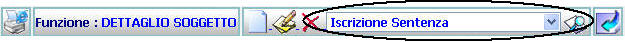
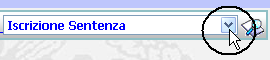
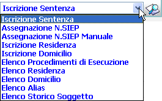
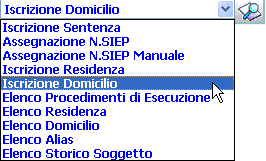
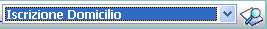

<html>

<head>
<base target="_self">
<meta http-equiv="Content-Type" content="text/html; charset=windows-1252">
<title>T_Menu_Tendina</title><style>a{font-weight:bold}</style>
<style>
<!--
p.MsoBodyText
	{margin-top:0in;
	margin-right:0in;
	margin-bottom:6.0pt;
	margin-left:0in;
	font-size:12.0pt;
	font-family:"Times New Roman";
	}
span.titolo2
	{font-family:Tahoma;
	font-weight:bold;
	}
-->
</style>
<meta name="Microsoft Theme" content="sumipntg 0011">
<meta name="Microsoft Border" content="none, default">
</head>

<body background="_themes/sumipntg/sumtextb.jpg" bgcolor="#FFFFFF" text="#000066" link="#3333CC" vlink="#666699" alink="#990099"><!--mstheme--><font face="verdana,arial,helvetica">

<p><font face="Verdana"><b><a name="GENERALITA">GENERALITA'</a></b></font></p>
<p><font color="#000000" size="2"><span style="font-family: Verdana"><b>Menu a Tendina</b>:per determinate funzioni, 
in corrispondenza della barra funzione, può essere presente un menu a tendina 
con il quale è possibile lanciare l'esecuzione di funzioni correlate a quella 
che si sta eseguendo.</span></font></p>
<p>&nbsp;</p>
<p><font face="Verdana"><b>LE MASCHERE VIDEO</b></font></p>
<p><font color="#000000" size="2"><span style="font-family: Verdana">Il Menu a Tendina si 
presenta nel seguente modo</span></font><span style="font-family: Verdana"><font color="#000000" size="2">:</font></span></p>
<p>&nbsp;</p>
<p align="center">
</p>
<p>&nbsp;</p>
<p><b>COME FARE PER ...</b></p>
<p>&nbsp;</p>
<!--mstheme--></font><!--msthemelist--><table border="0" cellpadding="0" cellspacing="0" width="100%">
	<!--msthemelist--><tr><td valign="baseline" width="42"></td><td valign="top" width="100%"><!--mstheme--><font face="verdana,arial,helvetica"><font color="#000000" size="2" color="#000000"><span style="font-family: Verdana">Per 
	visualizzare la lista delle funzioni che sono correlate funzionalmente alla 
	funzione che si sta eseguendo occorre:</span></font><!--mstheme--></font><!--msthemelist--></td></tr>
<!--msthemelist--></table><!--mstheme--><font face="verdana,arial,helvetica">
<p>&nbsp;</p>
<blockquote>
	<ol>
		<li><font color="#000000" size="2" color="#000000"><span style="font-family: Verdana">
		Posizionarsi con il mouse in corrispondenza di:</span></font></li>
	</ol>
	<p align="center"><font color="#000000" size="2" color="#000000">
	<span style="font-family: Verdana">&nbsp;</span></font></p>
	<ol start="2">
		<li>
		<p align="left"><font color="#000000" size="2" color="#000000">
		<span style="font-family: Verdana">Cliccare con il bottone sinistro del 
		mouse;</span></font></p></li>
	</ol>
	<blockquote>
		<p align="left"><font color="#000000" size="2" color="#000000">
		<span style="font-family: Verdana">A questo punto si aprirà e verrà 
		visualizzata la lista delle funzioni </span></font>
		<font color="#000000" size="2" color="#000000"><span style="font-family: Verdana">che è 
		possibile attivare contestualmente a quella che si è appena utilizzata:
		</span></font></p>
		<p align="center"></p>
		<p:colorscheme
 colors="#ffffff,#214263,#808080,#214263,#bbe0e3,#333399,#009999,#99ff99"/>
		<p><font face="Verdana" color="#000000" size="2" color="#000000">Da notare che la lista 
		si presenterà con le funzioni disposte sequenzialmente a quello che è il 
		normale modo di operare, ovvero, per esempio, come nel caso della 
		figura, viene proposto come consiglio di eseguire la funzione 
		&quot;Iscrizione Sentenza&quot; come proseguimento logico alla funzione che è 
		stato appena eseguita (nell'esempio &quot;Inserimento Soggetto);</font></p>
		<p><font face="Verdana" color="#000000" size="2" color="#000000">nulla vieta però 
		all'utente, se lo ritiene opportuno, di eseguire invece un altra 
		funzione presente o non presente nella lista proposta.&nbsp; </font></p>
		<p>&nbsp;</p>
	</blockquote>
</blockquote>
<!--mstheme--></font><!--msthemelist--><table border="0" cellpadding="0" cellspacing="0" width="100%">
	<!--msthemelist--><tr><td valign="baseline" width="42"></td><td valign="top" width="100%"><!--mstheme--><font face="verdana,arial,helvetica"><font color="#000000" size="2" color="#000000"><span style="font-family: Verdana">Per 
	selezionare un altra funzione presente nella lista occorre:</span></font><!--mstheme--></font><!--msthemelist--></td></tr>
<!--msthemelist--></table><!--mstheme--><font face="verdana,arial,helvetica">
<blockquote>
	<ol>
		<li><font face="Verdana" color="#000000" size="2" color="#000000">scorrere la lista con 
		il puntatore del mouse
		 fino alla funzione 
		che si vuole eseguire:</font></li>
	</ol>
</blockquote>
<p align="center"></p>
<p align="center">&nbsp;</p>
<blockquote>
	<ol start="2">
		<li><font color="#000000" size="2" color="#000000"><span style="font-family: Verdana">
		Cliccare con il bottone sinistro del mouse;</span></font></li>
	</ol>
	<blockquote>
		<p><font color="#000000" size="2" color="#000000"><span style="font-family: Verdana">A 
		questo punto si chiuderà la tendina contenente la lista delle funzioni e 
		rimarrà visualizzata la funzione che si vuole eseguire:</span></font></p>
	</blockquote>
	<p align="center"></p>
</blockquote>
<p>&nbsp;</p>
<!--mstheme--></font><!--msthemelist--><table border="0" cellpadding="0" cellspacing="0" width="100%">
	<!--msthemelist--><tr><td valign="baseline" width="42"></td><td valign="top" width="100%"><!--mstheme--><font face="verdana,arial,helvetica"><font color="#000000" size="2" color="#000000"><span style="font-family: Verdana">Per 
	mandare in esecuzione la funzione prescelta occorre c</span></font><font face="Verdana" color="#000000" size="2" color="#000000">liccare 
	sul simbolo&nbsp;
	&nbsp; .</font><p:colorscheme
 colors="#ffffff,#214263,#808080,#214263,#bbe0e3,#333399,#009999,#99ff99"/><!--mstheme--></font><!--msthemelist--></td></tr>
<!--msthemelist--></table><!--mstheme--><font face="verdana,arial,helvetica">

<!--mstheme--></font></body>

</html>
